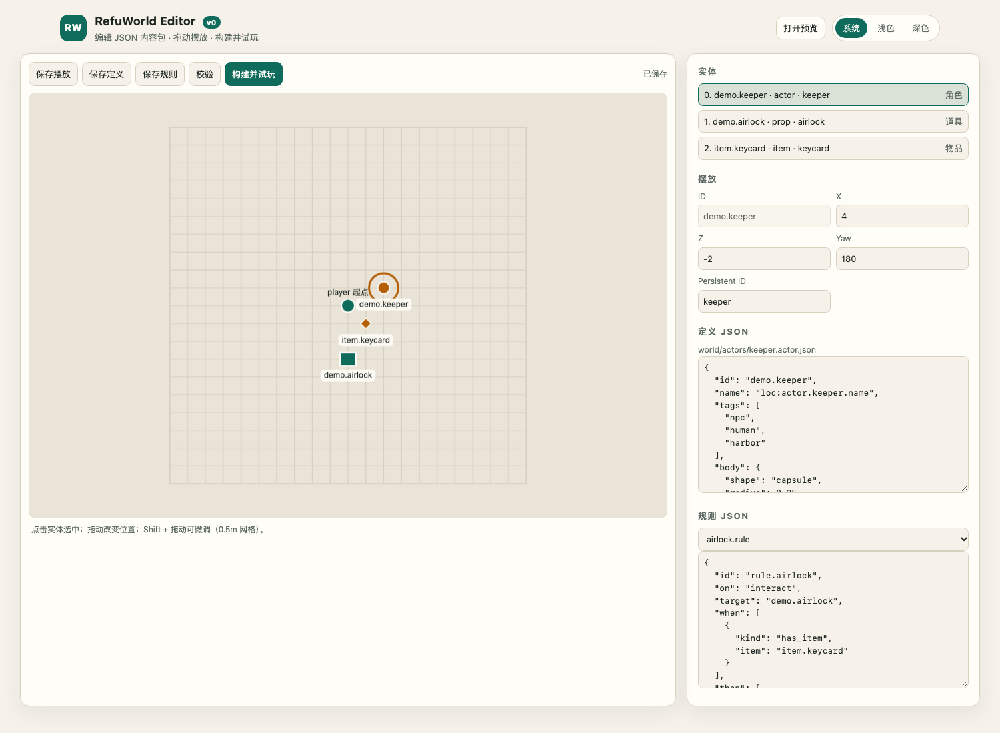
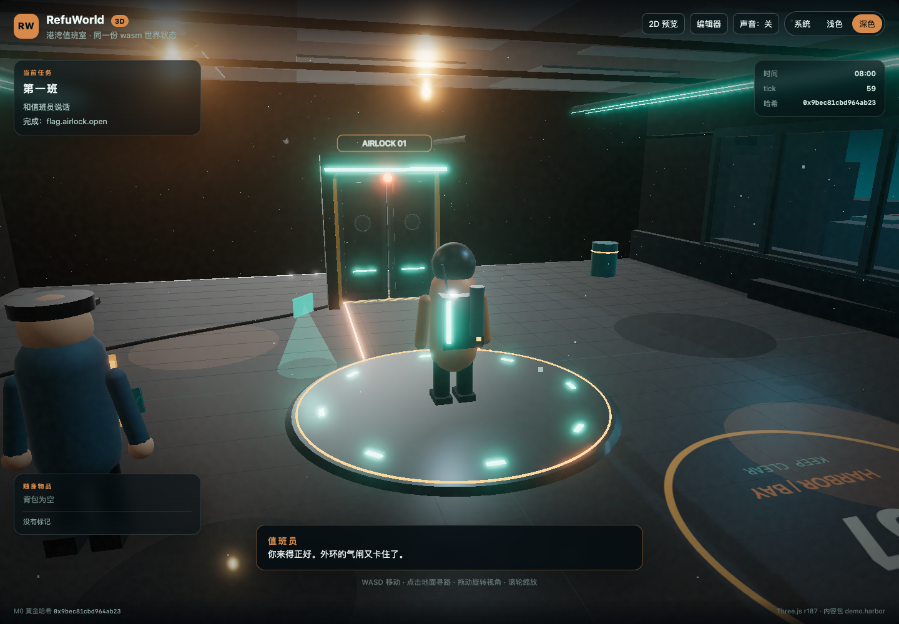

RefuWorld · 世界系统中间层 · 给内容作者与第一次接手的人
你写世界，
引擎只负责把它画出来。
RefuWorld 把“世界怎么运转”从引擎里拿出来：Rust 内核负责确定性 tick、规则、空间、导航和存档；你用 TypeScript 或 JSON 描述内容；Web 编辑器、2D 预览和 3D 演示都只是这份内容的视图。你不需要先学 Godot 或 Unity 才能做出一个可玩的房间。
三十秒版本
打开 Web 编辑器 → 拖一个 NPC、一扇门、一张钥匙卡 → 写一条“有钥匙卡就开门”的规则 → 接一段对话和任务 → 构建并试玩。所有内容最终变成一个带哈希的内容包；同一条 trace 在 Headless、C ABI、wasm 预览里跑出同一局。
当前是 M2 完成 + L4/L5：TS DSL、19 个 2D/2.5D/3D Demo、ScriptHost、编辑器 v0.5、移动/寻路、导航/资产、社会关系、世界系统与内容测试均可运行。架构与迁移见 11 · 内核分层与迁移；剩余边界见 HUB 风险页。
内核分层
L0 时空物理（tick/空间/碰撞/导航）→ L1 主体交互（背包/门/物品）→ L2 行为能动（日程/行为）→ L3 叙事规则（flags/quests/dialogue/script）→ L4 社会关系（阵营/关系/声望）→ L5 世界系统（天气/能源/水/AI 负载）。上层依赖下层；EntityStore 用组件列存储，Snapshot 仍是 v1 DTO。
01五分钟跑起来
cd games/world
npm install # TypeScript 类型检查（可选但推荐）
./test/run_m0.sh # 内核 / C ABI / 坏包 / QuickJS / 基准
./test/run_m1.sh # TS DSL / 内容 / 编辑器 / 3D / 5k real / wasm只做内容预览时，最短路径是：
cd games/world
./web/build.sh
node tools/serve-web.mjs --port 8787
# 2D：http://127.0.0.1:8787/web/
# 3D：http://127.0.0.1:8787/web/demo3d.html两个入口别混淆
静态预览（tools/serve-web.mjs）只读，适合看和演示；编辑器（./worldc editor）才能保存、校验和构建。编辑器打开 http://127.0.0.1:8788/。
2D 预览
俯视、点击/键盘交互；最适合验证规则和任务。
web/index.html
2.5D / 3D 演示
等距夜市/温室；3D 港湾、夜班货运、太阳城农场、霓虹下城。换个视图看同一个世界。
web/iso.html · demos.html
Web 编辑器
拖摆放、改字段/对话、校验、构建并试玩。
worldc editor --port 8788
02第一次打开编辑器
启动编辑器：
cd games/world
./worldc editor --port 8788
# 浏览器打开 http://127.0.0.1:8788/
编辑器里最重要的四个动作
| 动作 | 会发生什么 | 什么时候用 |
|---|---|---|
| 保存摆放 / 保存定义 / 保存规则 / 保存对话 | 写源 JSON；服务器调用 worldc validate，失败返回 422 并回滚文件 | 每次修改后 |
| 烘焙导航 | 从 Zone + 静态 Prop AABB 生成 world/nav/<id>.json | 拖动门/墙/大型道具后 |
| 撤销 / 重做 | 拖动、表单、JSON、对话修改都进 undo 栈 | 改错时 |
| 构建并试玩 | 保存 → 烘焙 → 构建 → 复制 pack.data → 打开预览 | 验证完整闭环 |
编辑器编辑的是 data/demo.harbor 的 JSON 包；src/content/demo.harbor 的 TS 源不会自动同步。两条前端二选一，不要同时改。
03TS DSL：类型即文档
作者只写 define*；编译器收集后写规范化 JSON，再由 Rust 校验/哈希。
// src/content/demo.harbor/rules.ts
import { defineRule } from "#world-authoring";
defineRule({
id: "rule.airlock",
on: "interact",
target: "demo.airlock",
when: [{ kind: "has_item", item: "item.keycard" }],
then: [
{ kind: "open_door" },
{ kind: "play_sound", id: "sfx.airlock.open" },
{ kind: "set_flag", flag: "flag.airlock.open", value: true },
{ kind: "emit", event: "airlock.opened" },
],
else: [{ kind: "toast", text: "loc:airlock.locked" }],
});编译与对比：
cd games/world
./worldc ts-check
./worldc ts-build --compare data/demo.harbor
npm run dev # 改 TS → 编译 → 构建 → 复制 web/pack.datats-build --compare 和 test，不要只改一边。脚本规则（ScriptHost）
事件作用域脚本放在 <pack>/scripts/*.js，定义 onEvent(ctx)；上下文包含 tick/event/flags/quests/entities/player/zone_id，返回命令数组。
function onEvent(ctx) {
if (ctx.event.kind !== "reactor.opened") return [];
return [
{ op: "set_flag", flag: "flag.script.reactor_seen", value: true },
{ op: "toast", text: "脚本：反应堆事件已记录" }
];
}支持 interact/talk/pickup/set_flag/start_quest/toast/open_door/…；有内存/栈/命令/中断预算，脚本异常变成 script_error，不杀世界。当前没有持久脚本状态、模块 import、异步调度或热重载。
04内容包长什么样
data/demo.harbor/
├── pack.json # id / version / kits / entry / tick_hz / assets
├── world/
│ ├── harbor.world.json # 起始区域 / 时间 / 种子 / 玩家
│ ├── zones/harbor.zone.json
│ ├── nav/nav.harbor.json # worldc bake nav 生成
│ ├── actors/keeper.actor.json
│ ├── props/airlock.prop.json
│ └── items/keycard.item.json
├── rules/airlock.rule.json
├── quests/first_shift.quest.json
├── dialogue/keeper.dlg.json
├── schedules/keeper.schedule.json
├── assets/assets.index.json # 逻辑资产 ID → 源文件
├── loc/zh-CN.json
└── tests/*.test.json四条约定：
一个定义一个文件
ID 命名空间：demo.keeper、item.keycard、flag.airlock.open；包内唯一。
资产只写逻辑 ID
mesh.keeper，不写 res://、.prefab 或引擎路径；由适配器解析。
导航是烘焙产物
zone.nav 引用 world/nav/<id>.json；用 worldc bake nav 生成，不手写格子。
文案用 loc key
内容里写 loc:actor.keeper.name；loc/zh-CN.json 提供实际文本。
05预览里能做什么
2D 预览
WASD / 方向键移动；点击地面寻路；点击物品/NPC/门；E 交互、F 拾取、T 对话；P 暂停、R 重置。
目标是 8 米内可交互；关闭的门会挡路，开门后可通过。
3D 演示
港湾/货运/太阳城/霓虹下城；第三人称或环绕镜头、WASD、E/F/T；L4 社会面板与 L5 能源/城市面板。
3D 只是表现层；规则、社会关系与系统状态仍在同一个 wasm 世界。

PreviewWorld.state()；3D 不复制规则。打开 2D 预览 · 打开 3D 港湾 · 夜班货运旗舰 · 太阳城农场 · 霓虹下城 · 2.5D 夜市 · Demo 索引 · Lab · NEON DRIFT
06CLI 速查
| 命令 | 做什么 | 常用参数 |
|---|---|---|
worldc validate | schema / 引用 / 文案 / 时间 / 对话 / 导航 / 资产校验 | --pack DIR --json |
worldc build | 构建可加载的 pack.data | --pack DIR --out DIR |
worldc ts-build | TS DSL → 规范化包；可自动烘焙导航 | --compare DIR |
worldc ts-check | TypeScript 类型检查 | — |
worldc test | 黄金 trace / 双跑哈希 | --trace FILE |
worldc content-test | 跑 tests/*.test.json 内容断言 | --filter |
worldc bake nav | 从 Zone/Prop 烘焙导航网格 | --zone --cell |
worldc editor | 启动本地编辑器服务器 | --port 8788 |
worldc bench | Demo 基准 / 真实 5k 基准 | --scenario real5k |
完整命令：./worldc --help；错误码：./worldc explain E-REF-001。
07测试与验收
cd games/world
./test/run_m0.sh # 测试 / 双跑 / 坏包 / C ABI / wasm QuickJS / 基准
./test/run_m1.sh # TS DSL / 内容测试 / 编辑器 / 多 Demo / 5k real / R-016
./worldc content-test # 只跑内容断言当前基线：
34 个 Rust 测试
core / pack / ffi / script / EntityStore / L4/L5；clippy 无警告。
19 条内容测试
港湾 4 + 夜市/温室/环形站各 1 + 10 个 2D 场景 + 太阳城 + 霓虹下城。
黄金哈希
0x3606a221e9990561；Headless / C ABI / wasm / Godot 一致。
worldc validate → worldc content-test → worldc test → ./test/run_m1.sh。只跑预览不跑测试，很容易把哈希漂移带进提交。08常见问题
| 现象 | 先看 | 处理 |
|---|---|---|
| 编辑器保存失败 / 弹出 422 | 日志里的错误码与路径 | 修复非法引用；服务器已自动回滚，不会留下半个包 |
nav 引用了不存在的导航网格 | world/nav/ | 跑 ./worldc bake nav 后重新构建 |
| 门开了但走不过去 | 导航是否在开门后重建 | M1 导航是静态烘焙；M2 才做动态更新 |
| 改 TS 没生效 | 是否跑了 ts-build | npm run dev 或 worldc ts-build --compare |
| 预览 404 / 加载失败 | 是否先 ./web/build.sh | 从 games/world 起 Node 静态服务器，不要直接 file:// 打开 |
| 3D 打不开 | WebGL2 / 是否本地服务器 | 换 Chrome；必须通过 http 打开 |
| 内容测试失败 | 期望的 flag / quest / inventory | 先看测试的 expect 与规则 set_flag 是否一致 |
09词表
| 词 | 在这套系统里指什么 |
|---|---|
| 内容包 / pack | 一个可版本化目录：pack.json + world/rules/quests/dialogue/...；唯一事实源。 |
| Zone | 区域：边界、摆放、导航引用；一个 World 可有多个 Zone。 |
| Entity | 运行期实例：player / actor / prop / item；内容 ID 与运行期 ID 分离。 |
| tick | 固定 60 Hz 逻辑步；表现层可插值，但规则不随帧率变化。 |
| 黄金 trace / hash | 固定输入轨迹 + 状态哈希；用于回放、跨宿主对账、存档校验。 |
| 适配器 | 引擎侧薄层：输入/资产/视图/音频/存档；不含玩法规则。 |
| 烘焙 | 从内容几何生成导航等派生数据；结果可复现，不手改。 |
| ScriptHost | 把事件上下文交给脚本，脚本返回命令；核心不依赖 QuickJS，宿主负责注入。 |
下一步读什么
项目 HUB：状态/决策/风险；07 M1 验收：完整证据与边界；08 两小时教程：按步骤做一遍；02 内容作者与工具链：schema 与工具链细节。
本指南按 2026-11-24 的仓库状态编写；如果命令/数字变了，以 games/world/README.md 与 test/run_m*.sh 为准。